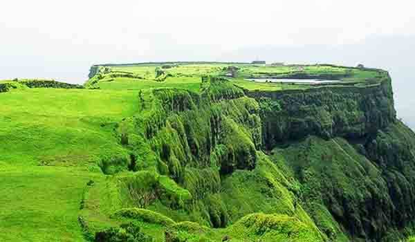
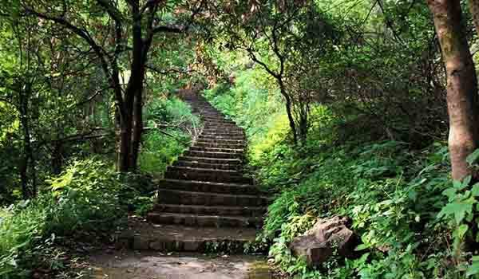

कोरीगड हा महाराष्ट्रातील, पुणे जिल्ह्यातील लोणावळ्याच्या दक्षिणेला २० किमी अंतरावर एक डोंगराळ किल्ला आहे. कोरीगड किल्ला म्हणजे छत्रपती शिवाजी महाराजांच्या वारसाची भव्यता दर्शवणारा निसर्गरम्य ठिकाण आहे. हे समुद्रसपाटीपासून सुमारे ९२३ मीटर उंच आहे. शिखराच्या पायथ्याशी तीन शोभिवंत मंदिरे बांधली गेलेली आहेत.
पायथ्याशी असलेल्या पेठ शाहपूर गावापासून ६०० पायर्या चढून किल्ल्यापर्यंत जाता येते. या किल्ल्यावर तुम्ही छत्रपती शिवाजी महाराजांच्या जीवनशैलीबद्दल सखोल माहिती घेऊ शकता. कोरीगड, त्याला कोराईगड देखील म्हणतात.
गडाच्या माथ्यावर एक विशाल पठार आहे. गडावर कोराई देवीचे मंदिर असून कोराई देवीची मूर्ती सुमारे ४ फूट आहे. गडाच्या दक्षिणेकडील बाजूस अनेक बुरुज आहेत. या किल्ल्यावर ६ तोफा आणि आणखी दोन मंदिरे आहेत. त्यापैकी लक्ष्मी नावाची सर्वात मोठी तोफ कोराई देवी मंदिराशेजारी आहे. गडाच्या माथ्यावरही दोन तलाव आहेत आणि त्यापुढील दोन गुहा आहेत. ट्रेक करणे सोपे आहे आणि गडाच्या माथ्यावर पोहोचण्यास एक तास लागतो.